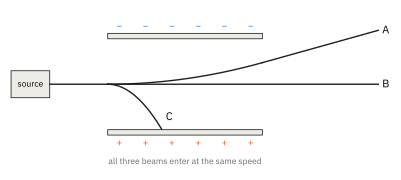

Topic 1 · Atomic Structure Part 1 Tutorial
ATOMIC STRUCTURE 1 TUTORIAL
Use the Data Booklet where you need constants. Answers that need a calculation should show the working.
1. (a) Copy and complete the table.
| Particle | Relative charge | Relative mass | Where it is found in the atom |
|---|---|---|---|
| proton | |||
| neutron | |||
| electron |
(b) Which part of the atom contains almost all of its mass?
(c) Explain why an atom has no overall charge.
2. (a) Copy and complete the table.
| Species | Protons | Neutrons | Electrons |
|---|---|---|---|
| 4020Ca2+ | |||
| 199F− | |||
| 5927Co | |||
| 8135Br− | |||
| 147N3− | |||
| 5224Cr3+ |
(b) A species has 16 protons, 18 neutrons and 18 electrons. Write its full symbol, showing the nucleon number, proton number and charge.
(c) Do the same for a species with 26 protons, 30 neutrons and 24 electrons.
3. Magnesium has three naturally occurring isotopes, 24Mg, 25Mg and 26Mg.
- What is meant by the term isotopes?
- State the numbers of protons, neutrons and electrons in an atom of each isotope.
- Explain why samples of pure 24Mg and pure 26Mg react in exactly the same way with dilute hydrochloric acid.
- State one property in which the two samples would differ, and explain why.
4. Beams of protons, neutrons and electrons, all travelling at the same speed, are passed between two charged plates. The three paths are labelled A, B and C below.

- Identify the particles in beams A, B and C.
- Explain why beam C is deflected much more than beam A.
- Beam A is replaced by a beam of 2H+ ions travelling at the same speed. Describe how the path would change.
5. In an experiment, a beam of protons is deflected by 8.0° towards the negative plate of an electric field. Beams of the following species then enter the same field at the same speed as the protons.
7Li+ 4He2+ 12C6+ 19F−
- Calculate the angle of deflection of each species, and state the direction.
- Which two of these species could not be separated by this method? Explain.
- Explain why a beam of neutrons is not deflected.
6. In 1909, Geiger and Marsden fired alpha particles (4He2+) at a very thin sheet of gold foil.
- Almost all the alpha particles passed straight through the foil. What does this tell you about the structure of the gold atom?
- A very small number were deflected through large angles, and a few bounced back. What does this tell you about the nucleus?
- Suggest why the electrons in the gold atoms were not responsible for the large deflections.
7. Consider the following species.
16O2− 19F− 20Ne 23Na+ 24Mg2+ 14C 15N
- Which of these species are isoelectronic with a neon atom?
- Group the species that have the same number of neutrons as each other.
- Which species has two more protons than electrons?
8. (a) Use the Data Booklet values to calculate the mass, in kg, of one atom of 12C, found by adding up the masses of its protons, neutrons and electrons.
(b) Calculate the percentage of this mass that is due to the electrons. Comment on your answer.
9. (Further example.) Mass spectrometers sort ions by their mass-to-charge ratio, m/z. The mass spectrum of bromomethane, CH3Br, shows two molecular-ion peaks, at m/z 94 and 96, of almost equal height.
- Explain why there are two molecular-ion peaks, and why they are almost equal in height. (Take 12C and 1H only.)
- Predict the m/z values and the approximate ratio of heights of the molecular-ion peaks of chloromethane, CH3Cl.